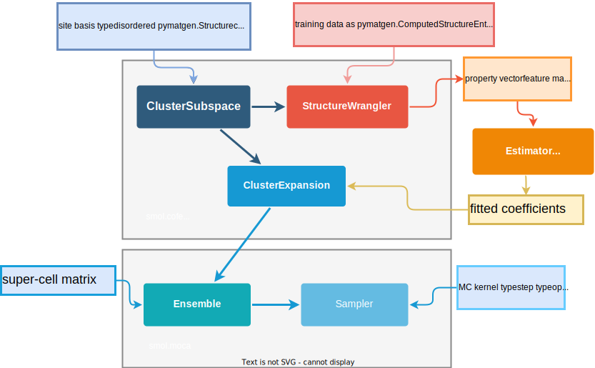

User Guide#
smol implements functionality and extensions of CE-MC methodology. It includes tools to define, generate and fit a cluster expansion (or more generally an applied lattice model). Additionally, it includes tools to run Monte Carlo simulations to sample thermodynamic properties based on a fitted lattice model. The package is organized in three main subpackages:
Cluster Orbit Function Expansions package (
smol.cofe) includes classes and functions to define, train, and test cluster expansions.Monte Carlo package (
smol.moca) includes classes and functions to run Markov Chain Monte Carlo (MCMC) sampling based on a cluster expansion Hamiltonian (and a few other Hamiltonian models).Cluster Analysis and Applications package (
smol.capp) includes classes and functions to generate random, special-quasirandom, and ground-state structures.
Overview diagram#
An overview diagram of the main classes and data inputs necessary to build and sample a lattice model is shown below.
Following the diagram above, the general workflow to construct, fit and sample a lattice model is as follows,
Create a
ClusterSubspacebased on a disordered primitivepymatgenStructure, a given set of diameter cutoffs for clusters, and a specified type of basis set.Use the
ClusterSubspaceto create aStructureWranglerto generate fitting data in the form of correlation vectors and a normalized property (usually energy). The training data, energy and additional properties are added to theStructureWrangleraspymatgenentries of type ComputedStructureEntry.Fitting data in the form of a correlation
StructureWrangler.feature_matrixand a normalized propertyStructureWrangler.get_property_vector()can be used as input to a linear regression estimator from any choice of third party package, such asscikit-learn,glmnetorsparse-lm.Using the fitted coefficients and the
ClusterSubspaceinstance, aClusterExpansionis constructed. AClusterExpansioncan be used to predict properties of new structures, obtain the effective cluster interactions, prune out unimportant terms, among other things.Using a
ClusterExpansioninstance, anEnsembleobject can be created to sample the corresponding Hamiltonian for a given supercell size and shape that is specified as a supercell matrix of the unit cell corresponding to the disordered structure used in the first step.Finally, an
Ensemblecan be sampled in a Monte Carlo simulation by using a anSampler.Optionally or in addition, use classes in the
smol.cappmodules application to search for special-quasirandom structures or ground-state structures.
This simple workflow shown is sufficient for the majority of applications. A summary of the main classes is given below. For more advanced use and custom calculations a more detailed description of the package is given in the Package Design section of the Developing page.
Main classes#
Below is a general description of the core classes in each submodule, to help understand the design, usage and capabilities of smol. You can also refer to the API Reference for full documentation of all classes and functions in the package.
Cluster Orbit Function Expansions package#
smol.cofe includes the necessary classes to define, train, and test cluster
expansions. A cluster expansion is essentially a way to fit a function of
configurational degrees of freedom using a specific set of basis functions that
allow a sparse representation of that function (which resides in a high
dimensional function space). For a more thorough treatment of the formalism of
cluster expansions refer to this document or any of following references
[Sanchez et al., 1993,
Ceder et al., 1995,
van de Walle et al., 2009].
The core classes are:
Cluster subspace#
ClusterSubspace contains the finite set of orbits and orbit basis
functions to be included in the cluster expansion.
In general, a cluster expansion is created by first generating a
ClusterSubspace, which uses a provided primitive cell of the
pymatgen Structure
class to build the orbits of the cluster expansion. Because orbits generally
decrease in importance with length, it is recommended to use the convenience
method from_cutoffs() to specify the cutoffs of different size
orbits (pairs, triplets, quadruplets, etc.) In addition to specifying the
type of site basis functions and their orthonormality,
ClusterSubspace also has capabilities for matching fitting structures
and determining site mappings to compute correlation vectors. A variety of options
for commonly used site basis sets are readily available, including:
Polynomial [Sanchez et al., 1993]
Sinusoid [van de Walle et al., 2009]
Species indicator (aka lattice gas) [Zhang et al. 2015]
Additionally, the subclass PottsSubspace implements the terms to build a
redundant (frame) expansion using site indicator functions
[Barroso-Luque et al., 2021]
Full documentation of the class is available here, Cluster Spaces.
Structure wrangler#
StructureWrangler handles input data structures and properties
to fit to the cluster expansion.
Once a set of structures and their relevant properties (for example, their
volume or energies) have been obtained (e.g., through first-principles
calculations), StructureWrangler can be used to process this data.
Specifically, based on a given ClusterSubspace,
StructureWrangler can to compute correlation vectors and convert
the input structure data into a feature matrix for fitting to the property
vector. Additional methods are available to help process the input data,
including methods for checking, preparing, and filtering the data.
Full documentation of the class is available here: Structure Wrangler.
Cluster expansion#
ClusterExpansion contains the fitted coefficients of the cluster
expansion for predicting CE properties of new structures.
Based on the feature matrix from the StructureWrangler, one can fit
fit the data to the properties using any fitting method they like (e.g.,
linear regression, regularized regression, etc). smol.cofe
contains wrapper class RegressionData to save important information from
the regression method used (optionally including the feature matrix, target vector,
regression class, and hyperparameters). Specifically a convenience constructor to
extract information from regression methods in
sklearn or those following their API is included.
The fitted coefficients and
ClusterSubspace objects are then given to ClusterExpansion.
The ClusterExpansion object can be used to predict the properties
of new structures but more importantly can be used along with the Monte Carlo package
classes for MC sampling.
Full documentation of the class is available here: ClusterExpansion.
Monte Carlo package#
smol.moca includes classes and functions to run Markov Chain Monte Carlo
sampling of statistical mechanical ensembles represented by a cluster expansion
Hamiltonian (there is also support to run MCMC with simple pair interaction
models, such as Ewald electrostatic interactions). MCMC sampling is done for a
specific supercell size. In theory the larger the supercell the better the
results, but in practice there are many other nuances for picking the right
supercell size that are beyond the scope of this documentation. Our general
suggestion is to use the minimum supercell size that ensures convergence of
the property of interest at equilibrium. Note that for extensive properties,
the property of interest is usually the normalized property (e.g. energy per
prim).
The core classes are:
-
ClusterExpansionProcessorClusterDecompositionProcessorEwaldProcessorCompositeProcessor
Ensemble#
The Ensemble class represents the specific statistical mechanics ensemble
by defining the relevant thermodynamic boundary conditions in order to compute
the appropriate ensemble probability ratios. For example,
canonical ensemble is used for systems at constant temperature and
constant composition, and can be created simply using an Ensemble without setting
any chemical potentials. While a semigrand ensemble is used for systems at
constant temperature and constant chemical potential, which can be created simply by setting
the Ensemble :prop:`chemical_potentials`. Ensembles also hold
information of the underlying set of Sublattice for the configuration
space to be sampled. Note that as implemented, an ensemble applies to any
temperature, but the specific temperature to generate samples at is set in kernel used
when sampling using a Sampler.
Full documentation of the class and its subclasses are available here: Ensembles.
Sampler#
A Sampler takes care of running MCMC sampling for a given ensemble.
The easiest way to create a sampler (which suffices for most use cases) is to
use the from_ensemble() class method, which is sufficient for most cases using
only a Metropolis algorithm and simple state transitions. For more advanced use cases
and elaborate MCMC sampling more knowledge of the underlying classes (especially
Metropolis which applies the Metropolis-Hastings algorithm and
MCUsher which proposes relevant flips) is necessary.
Full documentation of the class is available here: Sampler.
SampleContainer#
A SampleContainer stores data from Monte Carlo sampling simulations,
especially the occupancies and feature vectors. For lengthy MC simulations a
SampleContainer allows streaming directly to an
HDF5 file, and so minimize
computer memory requirements. It also includes some minimal methods and properties
useful to begin analysing the raw samples, including methods to obtain the
mean/variance/minimum of energies, enthalpies, and composition.
Full documentation of the class is available here: Sample Container.
Processors#
A Processor is used to optimally compute correlation vectors, energy,
and differences in these from variations in site occupancies. Processors
compute values only for a specific supercell specified by a given supercell
matrix.
Users will rarely need to directly instantiate a processor, and it is recommended
to simply create an ensemble using the from_cluster_expansion() which
will automatically instantiate the appropriate processor. Then, accessing the
processor can be done simply by the corresponding attribute (i.e.
ensemble.processor). Many methods and attributes of a processor are
very useful for setting up and analysing MCMC sampling runs. For more advanced or
specific use cases, users will need to instantiate the appropriate processor directly.
Full documentation of the class and its subclasses available here: Processors.
Cluster Analysis and Applications package#
smol.capp includes functions and classes that enable further analysis and
applications of lattice models and cluster expansions. Notably, this includes
classes to generate special quasirandom structures (SQS) and to perform ground-state
searches.
The main classes are:
StochasticSQSGenerator#
The StochasticSQSGenerator class implements the stochastic SQS generation
algorithm proposed by
van de Walle, A. et al. that allows
generating SQS with a given number of sites and composition. In addition, the algorithm
can search for SQS using the original method based on correlation functions, or a more
efficient method based on cluster interactions instead.
Full documentation of the class is available here: Special Structures.
PeriodicGroundStateSolver#
Ground-state searches can be performed using the PeriodicGroundStateSolver,
which implements the ground state search procedure for a given supercell with periodic
boundary conditions proposed by
Huang, W. et al.. The
implementation in smol uses a different implementation based on mixed-integer
programming instead of MAXSAT, which allows searching for ground-states of cluster
expansion constructed with any arbitrary basis and complexity.
Full documentation of the class is available here: Ground States.